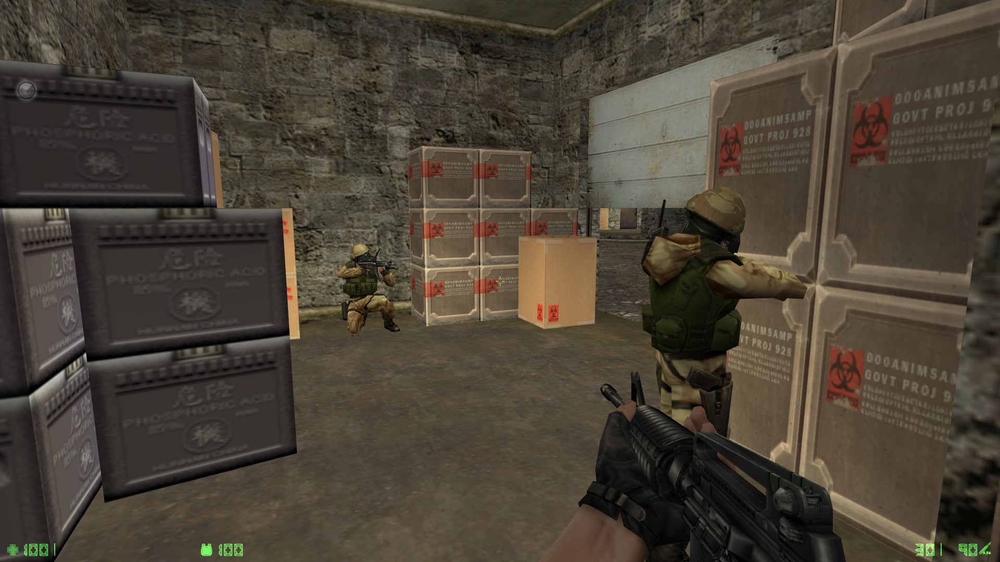
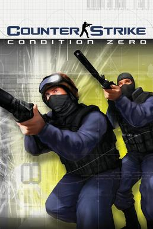

Counter-Strike: Condition Zero is a first-person shooter video game developed by Ritual Entertainment, Turtle Rock Studios, and Valve, and published by Sierra Entertainment and Valve. The follow-up to Counter-Strike (2000), it was released in March 2004 for Windows. Condition Zero utilizes the GoldSrc engine and has a multiplayer mode, which features updated character models, textures, maps and other graphical tweaks. It also includes two single-player campaigns; Tour of Duty and Condition Zero: Deleted Scenes. Alongside various other Valve titles, the game received versions for OS X and Linux in 2013.
 The primary game, Condition Zero, plays largely the same to Counter-Strike with the inclusion of bots and a "Tour of Duty" campaign across multiplayer maps. The game features a linear progression system where the player must complete each map by defeating opposing bots and completing challenges along the way, such as killing a certain amount of enemies, rescuing a certain amount of hostages, or killing an enemy with a specific weapon - new maps are unlocked after a previous one is completed. All game modes from Counter-Strike are also present in Condition Zero. Minor changes to the hostage rescue game mode were made to allow hostages to reach the extraction zone on their own unless confronted by a terrorist, and will cower if gunfire is heard.